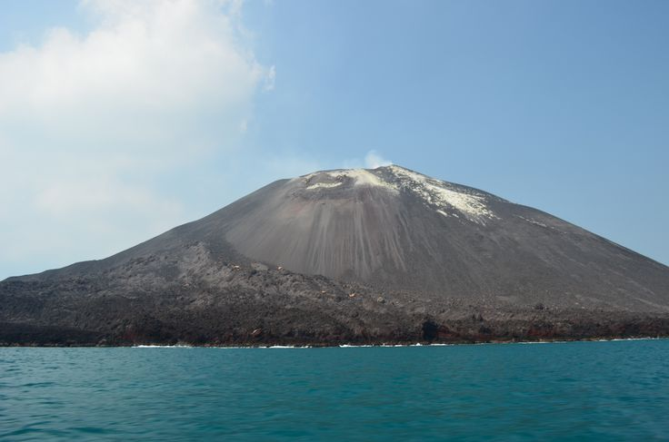

Website RAFFASYAHa day in my life |
|
| Beranda | Profil | Kegiatan | Kontak | |
|
 Gunung Anak Krakatau Berita Gunung Anak KrakatauGunung Anak Krakatau mengalami peningkatan aktivitas vulkanik pada awal September 2026. Erupsi menerus terjadi sejak 4 September pukul 23.07 WIB hingga 6 September 2026 pukul 00.04 WIB. Erupsi tersebut menghasilkan lontaran material vulkanik, lava, serta suara dentuman dan gemuruh yang terdengar hingga wilayah pesisir Banten. Setelah erupsi menerus berakhir, Gunung Anak Krakatau masih mengalami beberapa erupsi Strombolian. Aktivitas gunung api terus dipantau oleh Badan Geologi dan PVMBG karena masih terdapat aktivitas kegempaan serta potensi terjadinya erupsi lanjutan. Masyarakat dan wisatawan juga diimbau untuk tidak mendekati kawah aktif dalam radius yang telah ditetapkan. Pada 21 September 2026, status Gunung Anak Krakatau diturunkan dari Level III (Siaga) menjadi Level II (Waspada) karena aktivitas vulkaniknya menunjukkan penurunan. Meskipun demikian, masyarakat tetap diminta untuk mengikuti informasi resmi dari pihak berwenang dan tidak melakukan aktivitas di sekitar zona berbahaya. Erupsi tersebut juga dilaporkan menyebabkan munculnya daratan baru di sekitar kawasan Gunung Anak Krakatau. |
Tautan Eksternal |
|
Website Profil Raffasyah murid SMK Negeri 1 tangerang © Raffasyah Zidane Ardika |
|